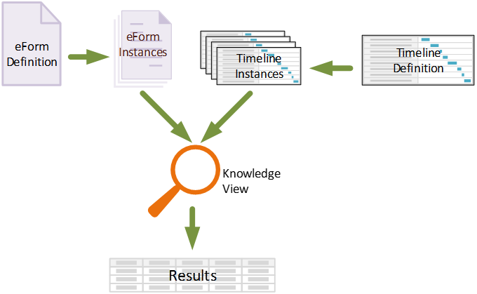
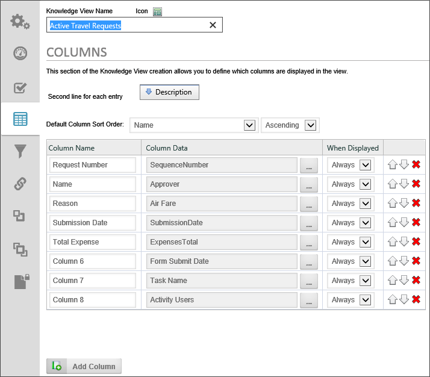
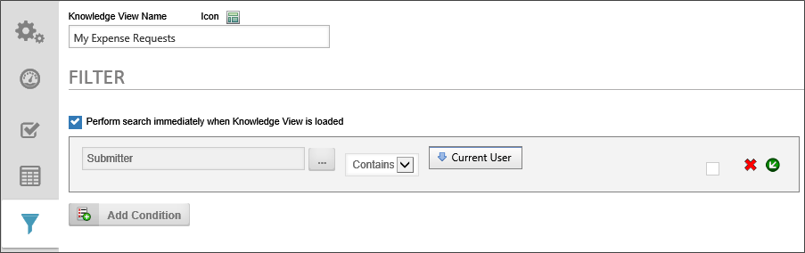
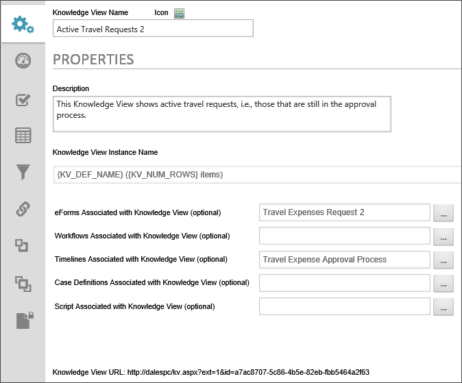
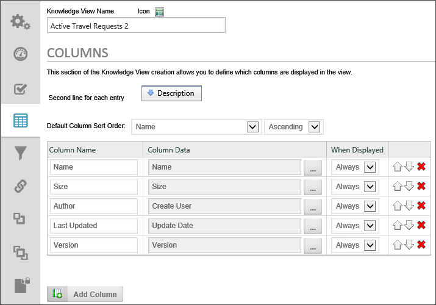
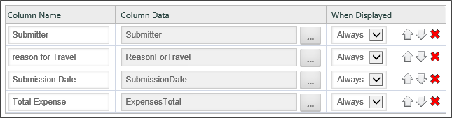
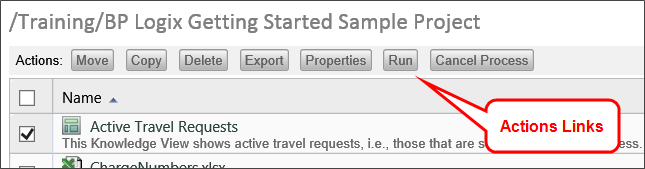
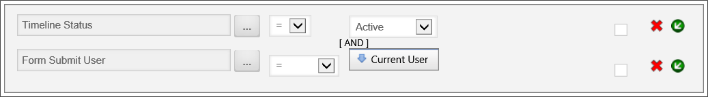

Process Director provides you with a convenient way to find and list information called Knowledge Views, or KViews, for short. The Knowledge View can display all types of information stored in Process Director, such as Forms, Process Timelines, attachments, etc. For the
Figure 116: Active Travel Requests Knowledge View
To understand how Knowledge Views work, we must first understand what Process Director does with definition objects like Form definitions, Process Timeline definitions, Workflow definitions, etc. The definition object contains no actual data, but merely defines what data will be stored. For example, the Form definition describes the data fields that the user will fill out to enter data. Similarly, the Process Timeline definition describes when activities will start and end, or when a user task will become due, based on when the process begins.
Regular, non-administrative users never interact with any of the definition objects directly. Instead, when a user wants to, say, fill out a Form, The Form definition makes a copy of itself, called an instance, that the user will fill with data in the fields specified in the Form definition. This instance object is what actually contains the data entered by the user. If ten different people fill out a Form, Process Director creates an instance for each person, so that there are ten instances of the Form, each of which contains the data filled out by one of the ten users.
By the same token, when a user submits a Form that initiates a Process Timeline, a new instance of the Process Timeline definition is created that stores the information about that specific run of the process. The whole purpose of the definition object is to describe the instance objects that are created to interact with the user.
Let's take a closer look at an example of the Process Timeline definition and a Process Timeline instance. When the definition is created, we might define a user activity as being due three days after the activity starts. When we create the definition, we obviously don't know when the activity will start. All we know is that, whenever the activity starts, we want the activity to become due in three days. When a user submits the Form that starts the process, Process Director creates an instance of the Process Timeline that contains the actual activity dates for that specific run of the process. So, in our example, if the activity begins on January 1st, the Process Timeline instance that is created will now set the due date for the activity as January 4th.
When we search for information in Process Director, we really don't care much about the definition objects, because they don't contain the data. While there are other, more complicated scenarios for using Knowledge Views, we are usually interested in searching through all of the existing instances of a Form or process to find specific data. We might, for instance, want to search for all Timeline Activities that are due in the next week, or for all Forms that were submitted by a specific person.

Figure 117: Knowledge Views
Knowledge Views display information in a tabular format, much like a spreadsheet. So much so, in fact, that the Knowledge View results can be exported to CSV or Excel format.
When constructing a Knowledge View, you select the columns that you wish the Knowledge View to display. The columns can consist of any system variable, such as Form fields, business rule results, Process Timeline values, and much more.

Figure 118: Choosing Knowledge View Columns
You can also choose to see different types of objects in the results. You can search for Forms, Process Timeline instances, business rules, documents, or any other type of Process Director object. You can select any number of object types to return, as well. The ability to return results containing any system variable from any type of Process Director object makes Knowledge Views very powerful.
Adding to that power is the filtering capability of Knowledge Views. Just as you can make a Knowledge View column out of any system variable, you can also filter every column to return only specific results.

Figure 119: Knowledge View Search Filters
The example in Figure 119: Knowledge View Search Filters shows the search filters for the Travel requests Search Knowledge View.
Navigate to the My Project folder. Next, select “Knowledge View” from the Create New… dropdown located in the upper right portion of the screen to open the Create Knowledge View screen. Type the words “Active Travel Requests 2” in the Knowledge View Name textbox, then click the OK button to save the Knowledge View and open the configuration screen. In the configuration screen’s Properties tab, add a description for the Knowledge View in the Description textbox.
This Knowledge View, when run, should display values from the project’s Form. To set that up, click the Build button for the Picker control labeled, “Forms Associated with Knowledge View (optional)” to open the Choose Form dialog box. In the Choose Form dialog box, select the Travel Expenses Request 2 Form. When you do so, the dialog box will close, and the Form name should be displayed in the Picker control’s textbox. Click Update to save your selection.

Figure 120: Knowledge View Properties Tab
In the Columns tab, we want to replace the default columns in the Knowledge View. The default columns don't contain any information of interest to us, so we need to replace them with some useful information from the Form we associated with the Knowledge View.

Figure 121: Default Columns to be Replaced
In the first line of the column definitions, replace the word "Name" in the Column Name text box with the text "Request Number". Now, click the Build button for the Picker control in the Column Data column to open the Choose System Variable dialog box.
In the Choose System Variable dialog box, click on the dropdown menu that is labeled "Name" to open the menu. Select Form >> Form Field from the menu, which will close the menu and make a dropdown labeled "Select Form Field" appear. From the dropdown labeled "Select Form Field", choose the "SequenceNumber" field. Now, click the OK button to save the selection and close the Choose System Variable dialog box. You will now see the "SequenceNumber" field listed in the Column Data column. Repeat these steps for the remaining columns, replacing the existing Knowledge View fields with the following fields from the Form:
When you are done, the Columns tab should look like Figure 122: Knowledge View Columns Tab below.

Figure 122: Knowledge View Columns Tab
Now we need to create the search filters that will allow us to find requests, based on some values in the Form. In the Filter tab, click the Add Condition button, which will add the first condition row. The new condition will default to a Form Field, but we need to change this. We want to see all active requests, that is, all requests that have not been completed and the Process Timeline is still actively running. From the menu labeled "Form Field", Select Timeline >> Timeline Status. Now click the OK button to save your selection and close the Choose System Variable dialog box.
Once the Choose System Variable dialog box has closed, the Timeline Status is now the active condition. Be sure the dropdown containing the operator is set to "=", and the dropdown containing the status is set to "Active. The condition should look like the sample in Figure 123: Completed Knowledge View Filter below.

Figure 123: Completed Knowledge View Filter
Click the OK Button to save the Knowledge View.
Now, we need to create a knowledge view that shows only the active requests from the current Process Director user, rather than all users. Otherwise, this new Knowledge View will be exactly like the one we just created. Instead of building the new Knowledge View from scratch, we can create it with another useful Process Director feature: the ability to copy objects.
If you're not there already, navigate to the root of the My Project folder. Find the Active Travel Requests 2 Knowledge View, and click the check box associated with the row. When you do, the Actions links at the top of the page will change.

Figure 124: Actions Links
Click on the Copy link. When you click the link, the Actions links will once again change, and new links will appear for copying options. Click the Copy to Here link, and the Knowledge View you selected will be copied into the folder with the name, "Active Travel Requests 2 (Copy)". Click on this new Knowledge View to open its definition.
Once the Knowledge View definition has opened, change the Knowledge View Name to "My Active Travel Requests 2", then click the Update button to save the change. Now, select the Filter tab so that we can add an additional filter for this Knowledge View.
We need to add an [AND] condition to the filter, so click the Insert an [AND] Condition button located on the left side of the existing condition to create a new blank [AND] condition.

Figure 125: Insert an "And" Condition Button
In the new condition’s row, click on the Picker control’s Build button to open the Choose System Variable dialog box. From the dialog box’s dropdown menu, select Form >> Form Submit User. Click the OK button to close the dialog box. The text “Submitter” should now be displayed in the textbox for the Picker control. In the condition, set the Operator dropdown to “=”. The Value dropdown should already display “Current User”; if it does not, set it to “Current User” to use the user’s identity to determine which records to return as a default.

Figure 126: Knowledge View Filter Tab
Click the OK button to save and close the Knowledge View definition screen.
We now have two Knowledge Views, one of which shows all active requests, and the other of which shows all active travel expense requests for the current user.
You can run either of the Knowledge Views by navigating to the root of the My Projects folder, clicking the check box next to the Knowledge View name, then clicking the Actions link labeled, "Run".

Figure 127: Running Knowledge View